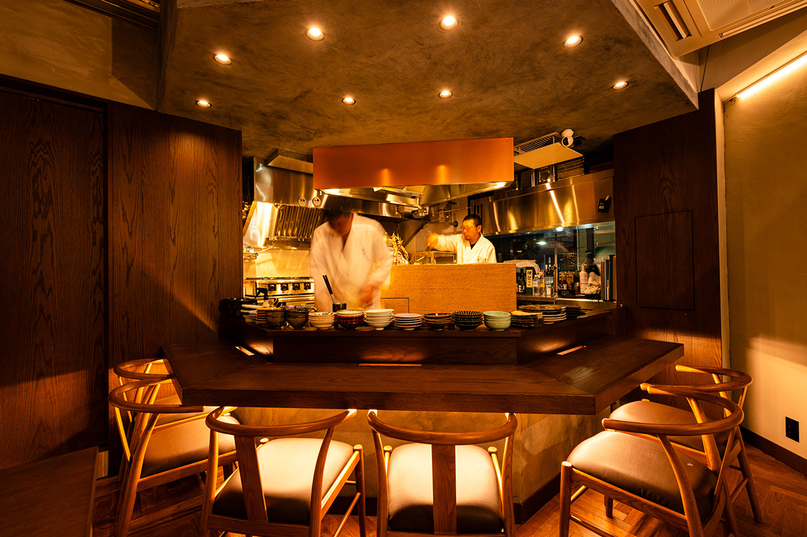
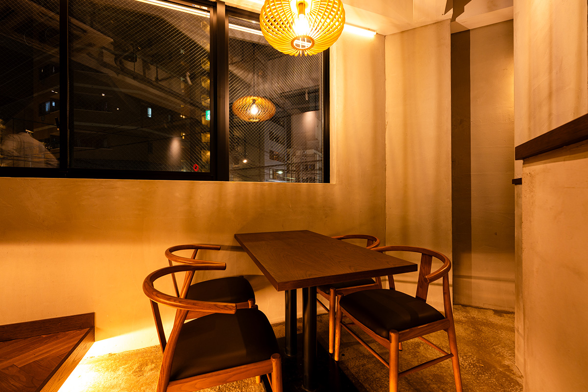
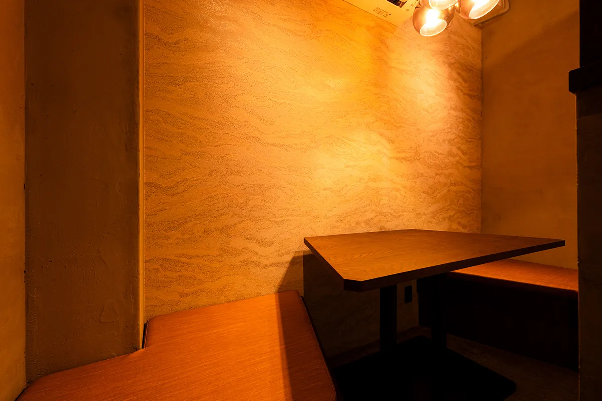

席・空間SPACE
隠れ家感のある落ち着いた店内
SPACE隠れ家のような落ち着いた雰囲気で、大切な方との特別な時間を彩ります。
特別な空間で、日本の「旨い」を存分にご堪能ください。
全14席（カウンター6席・テーブル4席・完全個室4席）・全席禁煙。

COUNTERカウンター
カウンター席では、職人が目の前で調理する臨場感と、炭火の温かい香りを感じながらお食事を楽しめます。
【席数】6席

TABLEテーブル
隠れ家のような落ち着いた雰囲気のテーブル席。
大切な方たちとのお食事にぴったりです。
【席数】1卓（4席）

PRIVATE ROOM個室
接待や会食に最適な個室も完備。
特別な空間で、日本の「旨い」を存分にご堪能ください。
【席数】4席（完全個室）
【個室 2〜3名様利用】2名様でご利用の場合、個室料3,000円を頂戴致します。
4名様でのご利用をご希望の場合は、お電話にてご相談ください。